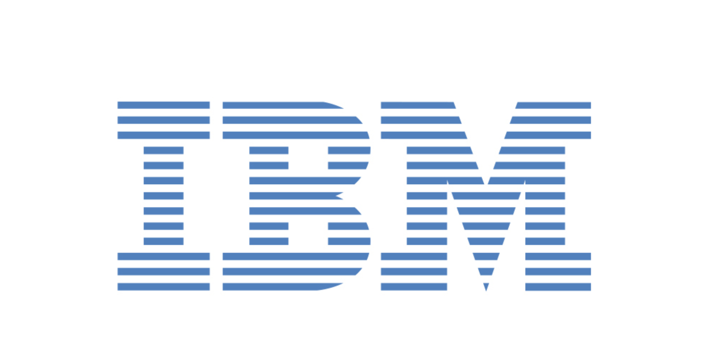

Certificates
Below are the certifications I have completed, along with key details (roll numbers / certificate IDs) and what I learned from each.
1. IBM : What is Data Science? — IBM

Issuing Authority: IBM
Candidate Name: Hrithik Bhardwaj
Certificate Credential: O5LITK0UPM2M
Date on Certificate: February 16, 2026
Grade Achieved: 94.16%
Certificate Link: Link
What I Learned: Through the successful completion of the “What is Data Science?” course by IBM, I developed a foundational understanding of the data science landscape and its growing impact in today’s data-driven world. This course provided insights into what data science is, why it has become one of the most in-demand professions of the 21st century, and how organizations leverage data to make informed decisions and drive innovation. I gained a clear understanding of the role of data scientists, their responsibilities, and the variety of career pathways that can lead into the field. Additionally, the course highlighted valuable advice and perspectives from experienced data science professionals, offering practical guidance for individuals beginning their journey in data science. These insights emphasized the importance of curiosity, continuous learning, and interdisciplinary skills in building a successful career in the domain. Throughout the program, I strengthened my knowledge in key areas such as data analysis, data literacy, artificial intelligence, machine learning, and cloud computing, while also understanding how these technologies collectively power modern data science solutions. Completing this course with a grade of 94.16% has reinforced my commitment to developing expertise in data science and applying data-driven thinking to solve real-world problems.
2. IBM : Tools for Data Science — IBM
Issuing Authority: IBM
Candidate Name: Hrithik Bhardwaj
Certificate Credential: MCYPTCBRQLP6
Date on Certificate: February, 2026
Grade Achieved: 94.16%
Certificate Link: Link
What I Learned: Through the successful completion of “Tools for Data Science” by IBM, I gained practical knowledge of the essential tools and technologies commonly used by modern data scientists to analyze data, build models, and manage data-driven projects. The course provided a comprehensive overview of the data scientist’s toolkit, including libraries, datasets, machine learning models, and big data tools that support the end-to-end data science workflow. I developed familiarity with widely used programming languages such as Python, R, and SQL, understanding how they are applied in data analysis, statistical computing, and data management. A significant part of the course focused on hands-on tools used in real-world data science environments. I learned to work with interactive development environments like Jupyter Notebook and RStudio, exploring their features for writing, executing, and documenting code effectively. In addition, I gained experience in version control and collaborative development by learning how to manage and track code using Git repositories and share projects through GitHub. These tools are essential for maintaining reproducible workflows and collaborating with other developers and data scientists. Throughout the program, I strengthened my understanding of machine learning tools, cloud computing platforms, data visualization software, and development environments, building a strong technical foundation for practical data science work. Completing this course with a grade of 95.66% further reinforced my ability to work with industry-standard data science tools and prepared me to apply these technologies effectively in real-world data analysis and machine learning projects.
3. DOEACC ‘O’ Level (Advanced Diploma) — NIELIT

Issuing Authority: National Institute of Electronics & Information Technology (NIELIT), Government of India
Candidate Name: Hrithik Bhardwaj
Roll Number: 1226794
Certificate Number: 137020
Date on Certificate: 07 Jan 2020
Overall Percentage: 80%
Overall Grade: A
what I learned: This certification strengthened my foundation in programming, web development, and practical IT systems. It improved my problem-solving skills, helped me understand how businesses use IT tools, and gave me hands-on experience with core concepts that support analytics and software-based projects.
Modules Completed
- IT Tools and Business Systems (JAN/2019) — Grade: S
- Internet Technology and Web Design (JAN/2019) — Grade: A
- Programming and Problem Solving through C Language (JUL/2019) — Grade: A
- Introduction to ICT Resources (JUL/2019) — Grade: A
- Practical (JUL/2019) — Grade: B
4. CCC NIELIT Certificate (Examination: September 2018)
Candidate Name: Hrithik Bhardwaj
Candidate ID / Certificate ID: GO67177C1097FF12
Credential / Roll Number: GO1809123584
Examination Cycle: September 2018
Grade: B
Place: New Delhi
Issue Date: 19-12-2018 (Controller of Examinations, NIELIT HQ)
what I learned: This certification helped me build discipline for structured examinations and improved my understanding of core computer fundamentals. It strengthened my confidence in working with IT concepts that are useful in analytics workflows, documentation, and professional technical environments.